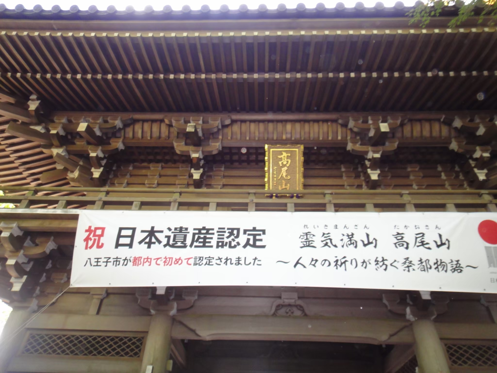
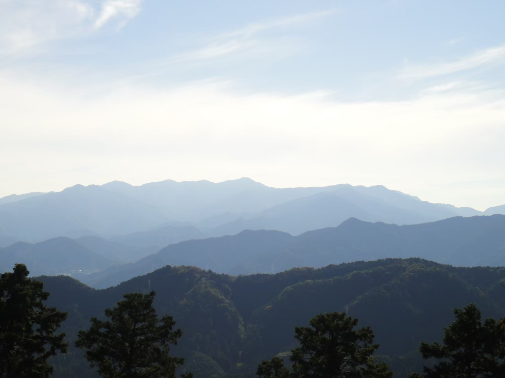
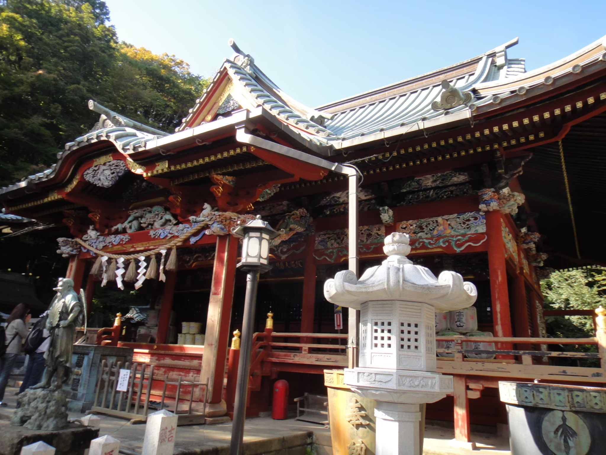

高尾山散歩
～秋の紅葉混雑シーズンを避けて～
10/24 2021
カテゴリー：通常散歩
 東京都八王子市
東京都八王子市
毎年本サークルでは高尾山へ散歩する伝統があり、本年度もその伝統？を引き続く形でお散歩に行って参りました。
高尾山は日本遺産に認定されたことで大いに盛り上がっています。東京都で初の日本遺産認定です。
日曜日に散歩活動を実施したこともあり、数多くの登山者がおりました。何とか人が映らない写真を撮ることが出来ました。
こちらは髙尾山薬王院になります。参加者同士でお参りをしたり、おみくじを引いたりとのんびりな時間を楽しみました。ちなみにおくじくにはユニークなイラストが描かれており、何とも興味深い内容でした。
← 次の記事 前の記事 →